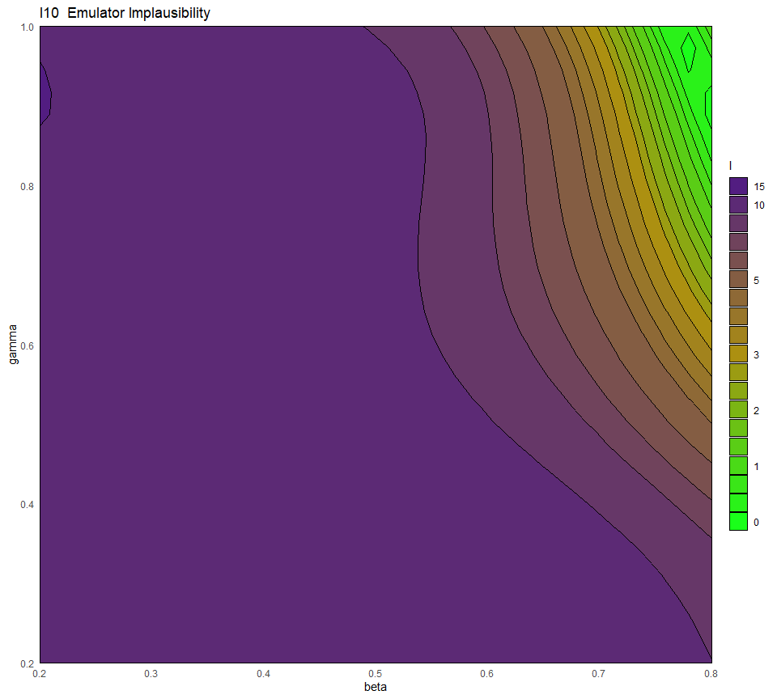

5 History matching using implausibility
In this section we give more details about implausibility and its role in the history matching process. Once emulators are built, we want to use them to systematically explore the input space. For any chosen parameter set, the emulator provides us with an approximation of the corresponding model output. This value is what we need to assess the implausibility of the parameter set in question.
5.1 The implausibility measure
For a given model output and a given target, the implausibility is defined as the difference between the emulator output and the target, taking into account all sources of uncertainty. For a parameter set \(x\), the schematic form for the implausibility \(I(x)\) is
\[I(x) = \frac{|f(x)-z|}{\sqrt{V_0 + V_c(x)+V_s+V_m}},\]
where \(f(x)\) is the emulator output, \(z\) the target, and the terms in the denominator refer to various forms of uncertainty. In particular
- \(V_0\) is the variance associated with the observation uncertainty;
- \(V_c(x)\) refers to the uncertainty one introduces when using the emulator output instead of the model output itself. Note that this term depends on \(x\), since the emulator is more/less certain about its predictions based on how close/far \(x\) is from points in the training set;
- \(V_s\) is the ensemble variability and represents the stochastic nature of the model (this term is not present if the model is deterministic);
- \(V_m\) is the model discrepancy, accounting for possible mismatches between the model and reality.
A very large value of \(I(x)\) means that the parameter set \(x\) does not provide a good match to the observed data, even factoring in the additional uncertainty that comes with the use of emulators. When \(I(x)\) is not too large, then we know that \(x\) might be a point of good fit, so we keep \(x\) in the subsequent wave.
In this case study the uncertainty that goes into the denominator of the emulator implausibility comprises the sigma values in the targets list, accounting for ensemble variability and observational error, and the emulator variance at the given parameter set. Note that if our targets were not synthetic, we could also choose to include the model discrepancy, to help account for the fact that no model perfectly represents reality.
An important aspect to consider is the choice of cut-off for the implausibility measure. The implausibility is a metric for evaluating how far out from being a good fit any parameter set is: there is no hard-and-fast rule for deciding at what point a parameter set is too implausible. A rule of thumb follows Pukelsheim’s \(3\sigma\) rule, a very general result which states that for any continuous unimodal distribution \(95\%\) of the probability lies within \(3\) sigma of the mean, regardless of asymmetry (or skewness etc). This is only the case for a single such distribution; for multiple univariate emulators it is slightly more involved. However a rough starting cut-off \(m\), for \((1-\alpha)-\)interval and \(N\) emulators, would be \[m = \Phi^{-1}\left(\frac{1+(1-\alpha^{1/N})}{2}\right)\] where \(\Phi^{-1}\) is the inverse of the normal distribution CDF.
5.2 Combining outputs together
Given multiple emulators, how do we measure overall implausibility? We want a single measure for the implausibility at a given parameter set, but for each emulator we obtain an individual value for \(I\). The simplest way to combine them is to consider maximum implausibility at each parameter set: \[I_M(x) = \max_{i=1,\dots,N}I_{i}(x),\] where \(I_i(x)\) is the implausibility at \(x\) coming from the \(i\)th emulator. For large collections of emulators, it may be useful to instead consider the second-, or third-maximum implausibility, which also provides robustness to the failure of one or two of the emulators. Where some model outputs are deemed more important than others (for instance, putting greater weight on emulation of the peak of an epidemic), we may instead take a weighted average across the implausibity measures.
5.3 Implausibility visualisations
To calculate the implausibility we will use the targets list, which represents our observations.
The default behaviour of the diagnostics and plots we will see here is to take a cut-off of \(3\) (following Pukelsheim’s \(3\sigma\) rule), and take maximum implausibility across the emulated outputs. For instance, to find the emulator implausibility for the first output we use the emulator_plot function specifying ‘imp’ for implausibility and passing it the target for the first output:

This is a 2D slice through the input space: for a chosen pair \((\bar\beta,\bar\gamma)\), the plot shows the implausibility of the parameter set \((\bar\beta, \bar\gamma, \delta_{\text{mid-range}}, \mu_{\text{mid-range}})\), where \(\delta_{\text{mid-range}}\) denotes the mid-range value of the delta parameter and similarly for \(\mu_{\text{mid-range}}\). Parameter sets with a high implausibility (darker region) are highly unlikely to give a good fit and will be discarded when forming the parameters sets for the next wave.
Another way of visualising implausibility is through a plot lattice (image shown below). While emulator_plot provides us with a 2D slice through the input space, plot lattices are 2D plots which are projections of the full space: each pixel represents the whole of the behaviour in the non-plotted parameters. More in detail, the upper diagonal is minimum-max implausibility: implausibility is evaluated across the whole space, and for each point in the projection the minimum of these max-implausibilities is plotted. Consider as an example the beta-mu plot (upper right corner): for each pixel in it, i.e. for each pair \((\bar \beta, \bar \mu)\), the implausibility is evaluated at \((\bar \beta, \gamma, \delta, \bar \mu, )\) for all possible values of \(\gamma\) and \(\delta\) and the minimum of these max-implausibilities is plotted. The lower diagonal is optical depth: this is a measure of how many points have maximum implausibility below our cutoff (in this case, 3). The lighter the colour, the higher proportion of points are acceptable. The diagonal is optical depth but for single parameters at a time. For example, the lower right corner shows that around \(7.5\%\) of all parameter sets that have mu equal to \(0.3\) are non-implausible.

Figure 5.1: Plot lattice for first wave